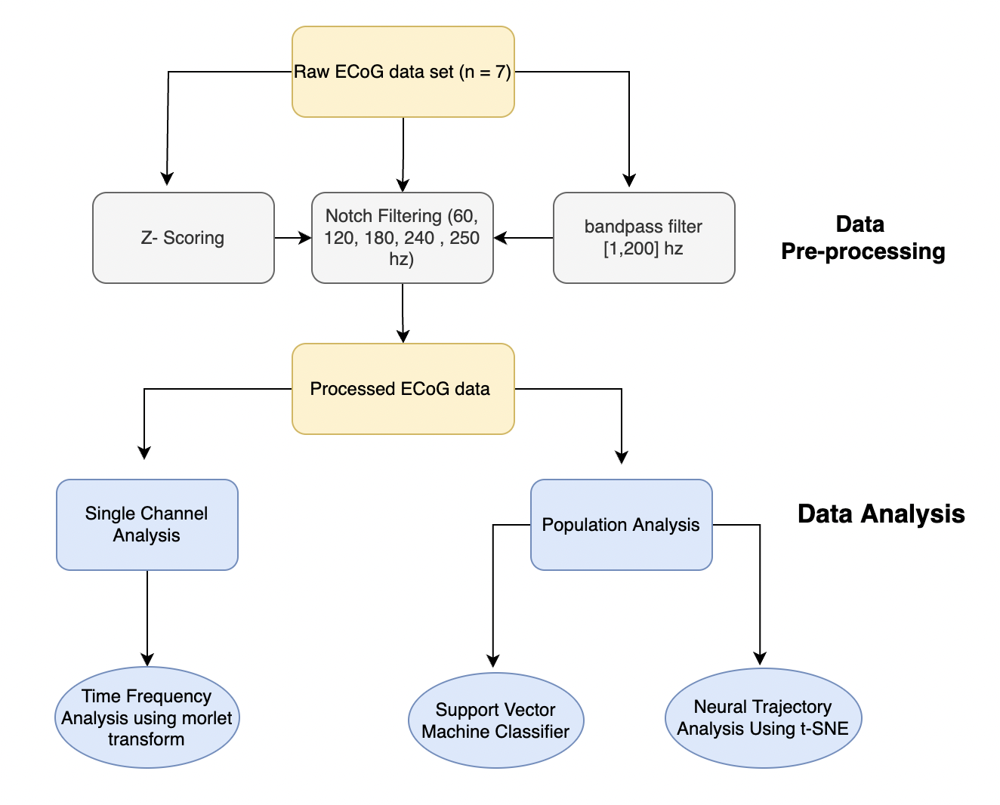

Imagined motor movement (“Imagery”) plays a crucial role in preparing actual movements and learning of complex motor skills. Miller et al (2010) have shown that the spatial distribution of activities in the primary motor area for imagery and actual movements does not overlap in high frequency (76-100Hz), but in low frequency band (8-32Hz). However, the neural substrates and neural representations of imagery still remain largely unknown.
The present study examined whether imagery shares similar mechanisms with actual movement at different levels. With electrocorticography (ECoG) dataset in seven human subjects during actual movement and kinesthetic imagery of the same motion type (hand & tongue), we investigated the channel-level mechanisms by looking at the differences between actual movement and imagery in the power of specific frequency bands (i.e. alpha/beta/gamma). Furthermore, we investigated the population-level mechanism by performing the multivariate classification and the neural trajectory analysis. Specifically, we trained the classifier on actual movement/imagery and tested it on imagery/actual movement to see whether the decoding can be generalized to each other. Also, using t-SNE, we examined whether the imagery and actual movement activated in the same sequence at the neural subspace. Our results (may) suggest that in addition to common neural substrates shared by imagery and actual movements, there also exists imagery-specific neural substrates at both the channel level and the population level.
Keyword: electrocorticography (ECoG) | time frequency analysis | multivariate classification | neural trajectory analysis

All pages not under the root directory of the website are listed below. You can also visit the list page of a single section, e.g., posts, or notes. See the About page for the usage of this theme.